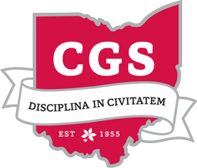

Ray Travel Awards
CERTIFICATE
Of Appreciation
Presented to
Judge’s Name
In recognition and sincere appreciation of your service as a Judge for the Ray Travel Award 2027 Funding Period 1. Your time, expertise, and thoughtful review of applications were invaluable to ensure a fair and thorough evaluation process.
We gratefully acknowledge your commitment and contribution to the review and selection process.
DATE
Month Day, 2027
Date presented
SIGNATURE
Kene Adimorah
CGS Treasurer & Ray Travel Award Chair
SIGNATURE
Johnathan Chisam
CGS President